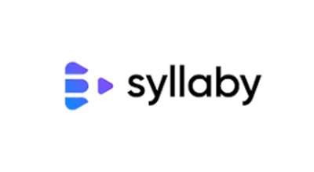
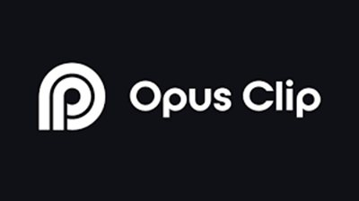
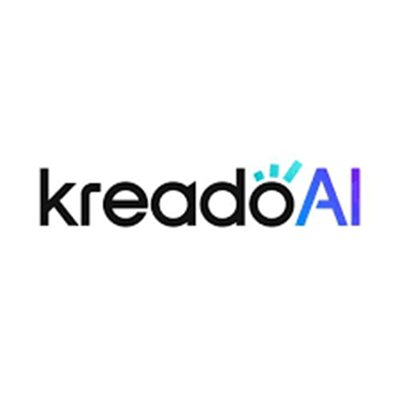
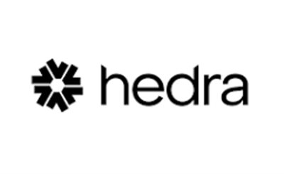
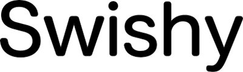
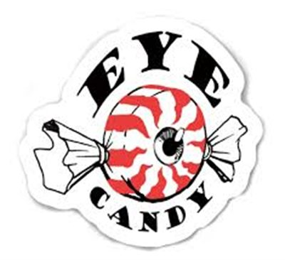

Best AI Video Tools 2026 – 11 Tested & Reviewed
AI video tools have completely changed how creators, marketers, and businesses produce content. Whether you need to generate videos from text, repurpose long content into viral short clips, create AI avatars, or animate your brand — these are the best AI video tools available right now. Every tool on this list has been reviewed by the WebTools team. Start creating faster and smarter today.

Syllaby
FreemiumAI platform for TikTok, Reels & YouTube Shorts. Analyzes trending topics and generates scripts, faceless videos, and AI avatars — no camera needed.
Try Syllaby →
Opus Clip
FreemiumTurns long videos into short viral clips automatically. AI finds the most engaging moments and adds captions optimized for social media.
Try Opus Clip →Kling AI
FreemiumAdvanced text-to-video and image-to-video generator with physics-aware motion modeling. Creates high-quality realistic scenes in seconds.
Try Kling AI →Klap
FreemiumRepurposes long YouTube videos and podcasts into short vertical clips with captions. Best tool for consistent short-form content production.
Try Klap →
KreadoAI
FreemiumGenerates AI avatar videos in 100+ languages from text. Ideal for localized marketing campaigns, product explainers, and e-learning content.
Try KreadoAI →
Hedra
FreemiumTransforms static images into realistic talking videos with synchronized voice and lip movement. No filming equipment needed.
Try Hedra →
Medeo
FreemiumCreate and edit full videos by simply typing instructions. AI generates visuals, voiceovers, and edits through a conversational interface.
Try Medeo →
Swishy AI
FreeCreates professional animations and kinetic graphics from ideas — no design experience required. Great for social media and brand content.
Try Swishy AI →
Clone Viral
FreemiumAnalyzes viral video hooks, formats, and storytelling patterns. Helps you replicate what works on TikTok and Instagram Reels.
Try Clone Viral →
EyeCandy
FreeVisual reference library organized by cinematic techniques. Perfect for directors and editors looking for filmmaking inspiration.
Try EyeCandy →Pixabay
FreeMillions of free stock photos, videos, and audio files with no copyright restrictions. Essential resource for marketers and content creators.
Try Pixabay →Frequently Asked Questions – AI Video Tools
What is the best AI video generator in 2026?
Kling AI and Syllaby are among the top picks. Kling AI excels at realistic text-to-video generation, while Syllaby is best for short-form social content without using a camera.
Which AI tool repurposes long videos into shorts?
Opus Clip and Klap are the leaders. Both automatically find the best moments from long videos and reformat them as vertical clips with captions for TikTok, Reels, and Shorts.
Are there free AI video tools?
Yes — Swishy AI, EyeCandy, and Pixabay are completely free. Kling AI, Opus Clip, Klap, and Syllaby offer free tiers with limitations.